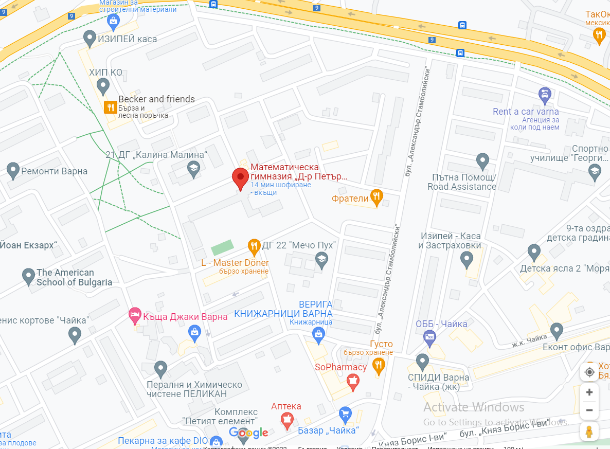
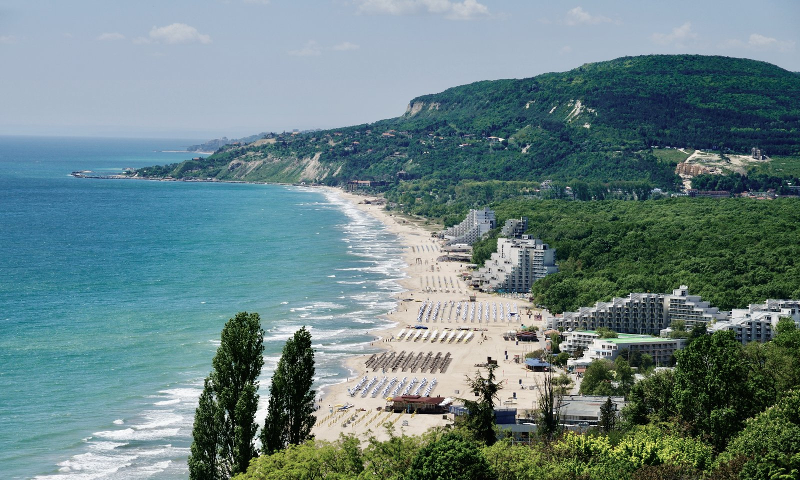
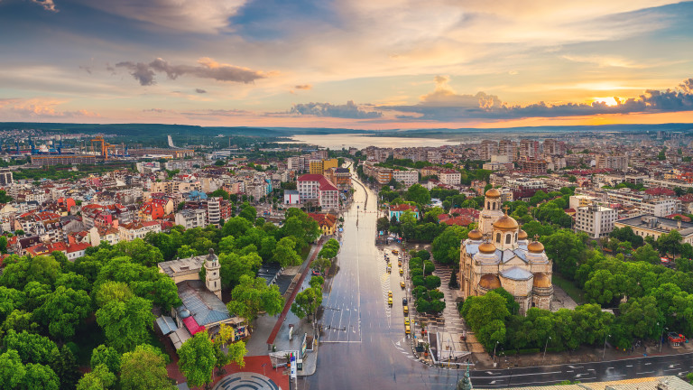

Varna Tours - кои сме ние?
Ние от Varna Tours сме екип от млади изследователи, отдали се на опознаване на страната ни и разкриване на нейните красоти пред Вас. Любовта ни към любимия ни роден град и познавайки го надлъж и нашир, ни дават възможността да се докоснете до 5 от най-приказните и магически символи на Варна.
Офисът ни се намира в Математическа гимназия "Д-р Петър Берон" и винаги бихме ви посрещнали с удоволствие ако имате нови идеи и предложения за подобряване на сайта ни. - Пресияна и Петър (създатели)
 
Варна е най-големият град в Североизточна България, разположен по бреговете на Черно море
и Варненското езеро и е административен център на едноименните община и област. Той е най-големият
град в Северна България и по българското Черноморие. Населението на града по сведения на ГРАО към
15 декември 2021 г. се изчислява на 347 924 души, което поставя Варна на трето място в България
(след София и Пловдив). На територията му е разположено Адмиралтейството на Българската армия.
Варна често се нарича „морската столица“ или „лятната столица на България“ и е важен туристически
и просветен център, изходна точка за курортите по Северното Черноморие.
В града се съхранява златно съкровище от халколита, за което се смяташе, че е най-старото
златно съкровище в света, дало име на т.нар. Култура Варна. След като бяха направени разкопки в
Града на птиците край Пазарджик, се установи, че откритото там обработено злато е с 200 – 300 г.
по-старо от предметите във Варненския халколитен некропол. Но това, което прави уникална Варна,
освен едно от най-старите златни съкровища в света, е и Международният балетен конкурс Варна,
състоящ се на всеки две години в Летния театър на Варна през летния сезон.
Благодарим Ви, че сте част от нашето голямо семейство и приятен път!